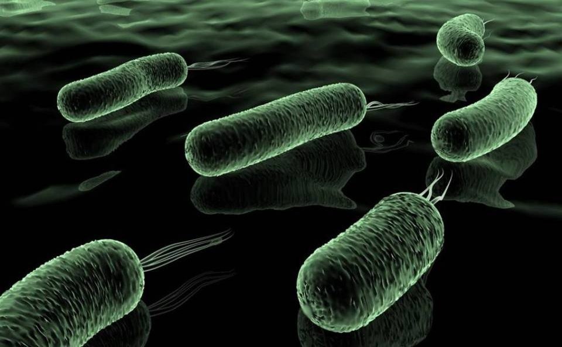
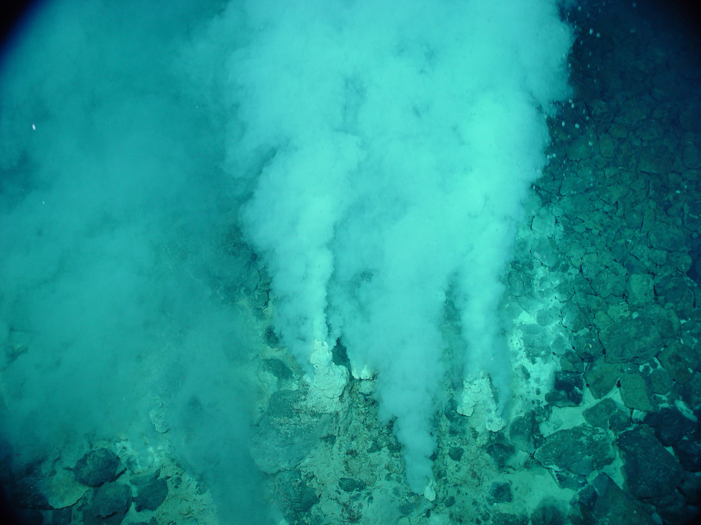

Theory of Origin of life
Personal Development,January 7 2021 : Thursday
Ana Marie Altarejos
Introduction
How did life begin? There can hardly be a bigger question. For much of human history, almost everyone believed some version of "the gods did it". Any other explanation was inconceivable. That is no longer true. Over the last century, a few scientists have tried to figure out how the first life might have sprung up. They have even tried to recreate this Genesis moment in their labs: to create brand-new life from scratch.
So far nobody has managed it, but we have come a long way. Today, many of the scientists studying the origin of life are confident that they are on the right track – and they have the experiments to back up their confidence. This is the story of our quest to discover our ultimate origin. It is a story of obsession, struggle and brilliant creativity, which encompasses some of the greatest discoveries of modern science. The endeavour to understand life's beginnings has sent men and women to the furthest corners of our planet. Some of the scientists involved have been bedevilled as monsters, while others had to do their work under the heel of brutal totalitarian governments.
Primordial soup
Primordial soup, or prebiotic soup (also sometimes referred as prebiotic broth), is the hypothetical set of conditions present on the Earth around 4.0 to 3.7 billion years ago. It is a fundamental aspect to the heterotrophic theory of the origin of life, first proposed by Alexander Oparin in 1924, and John Burdon Sanderson Haldane in 1929.
It is important to make the distinction between prebiotic and abiotic processes. While an abiotic process refers to anything that occurs without the presence of life, a prebiotic process refers to something that happens in the atmospheric and chemical conditions that the primitive Earth had about 4.2 billion years ago, and that preceded to the origin of life on the planet.

Biogenesis
Biogenesis is the production of new living organisms. Conceptually, biogenesis sometimes attributed to Louis Pasteur and encompasses the belief that complex living things come only from other living things, by means of reproduction. That is, life does not spontaneously arise from non-living material, which was the position held by spontaneous generation. Pasteur's claim followed Virchow's doctrine Omnis cellula e cellula (all cells from cells), itself derived from work of Robert Remak.
Abiogenesis
In evolutionary biology, abiogenesis, or informally the origin of life (OoL), is the natural process by which life has arisen from non-living matter, such as simple organic compounds. While the details of this process are still unknown, the prevailing scientific hypothesis is that the transition from non-living to living entities was not a single event, but an evolutionary process of increasing complexity that involved molecular self-replication, self-assembly, autocatalysis, and the emergence of cell membranes. Although the occurrence of abiogenesis is uncontroversial among scientists, its possible mechanisms are poorly understood. There are several principles and hypotheses for how abiogenesis could have occurred.
The study of abiogenesis aims to determine how pre-life chemical reactions gave rise to life under conditions strikingly different from those on Earth today.
